Forecasting
Forecasting is a big problem
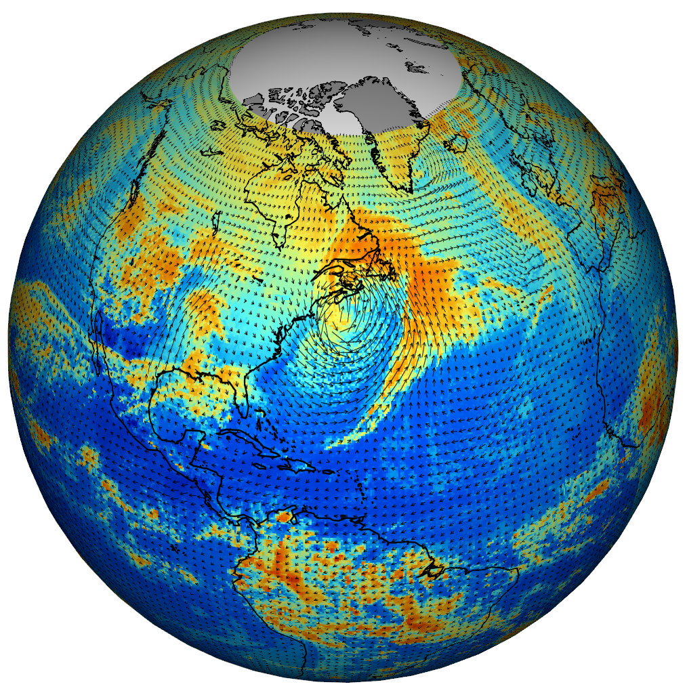Rapid progress
Actual v. predicted distances of Atlantic cyclones 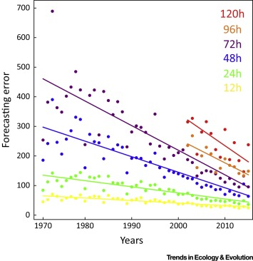
General, overlapping approaches
Machine learning
Statistical models
Nonlinear forecasting
"Mechanistic" modeling
DREAM challenges
Inference of gene regulatory networks
from knockout, observational, and synthetic data 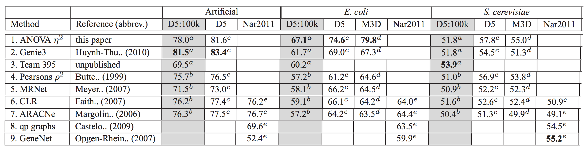
Compete Lasso, random forests, Bayesian networks, mutual information, ANOVA, etc.
Ecological niche modeling
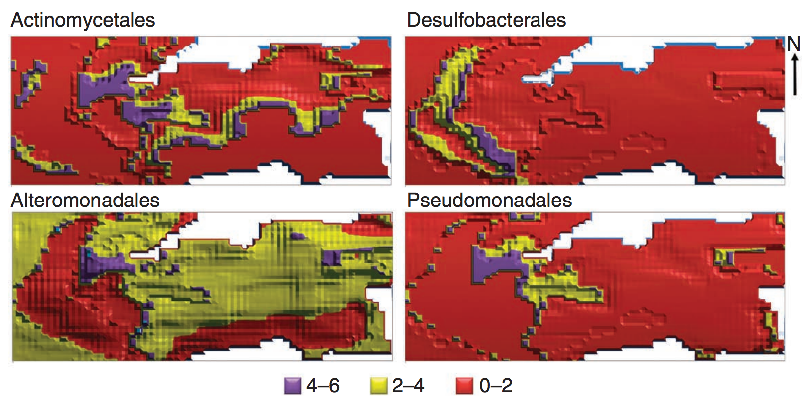An artificial neural network that included microbial interactions performed best.
Nonlinear forecasting
Reconstruct attractor ("library") from time series
Use attractor to make short-term predictions
Dynamics may be chaotic

Predictions with chaos: short shelf life
Trajectories in chaotic attractors diverge
$$ \lvert \delta \textbf{Z}(t)\rvert \approx e^{\lambda t}\lvert\delta\textbf{Z}_0\rvert$$
$\lambda$ is the Lyapunov exponent
(so with chaos, $\lambda>0$)
How to forecast
- Choose an embedding dimension $E$ and lag $\tau$
- Each point in $E$-dimensional space: $\{x_t,x_{t-\tau},x_{t-2\tau},...,x_{t-(E-1)\tau}\}$
- Construct these points from the time series
- Define a point to predict ("predictee")
- See where predictee's $E+1$ nearest neighbors wind up $t$ steps into the future
- Measure correlations $\rho$ between predictee's observed future state and neighbors' weighted predictions
Choosing $E$ and $\tau$
An unsolved problem
Use $E$ (and $\tau$) that yield best predictions
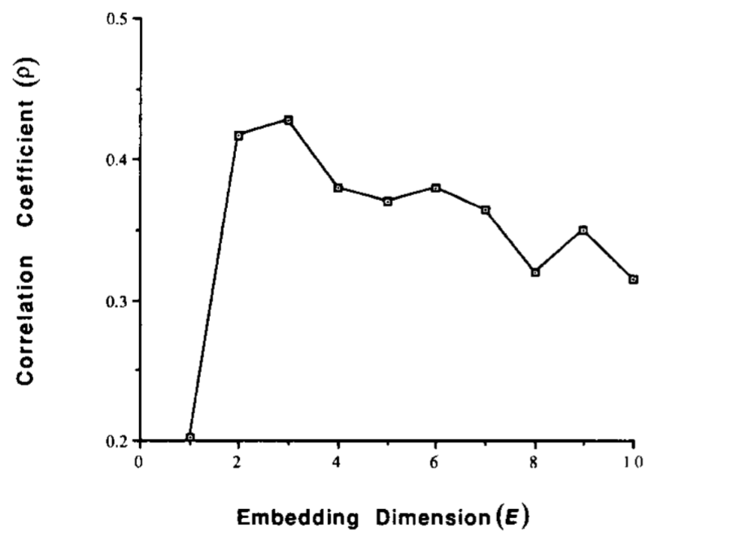Observational noise v. chaos
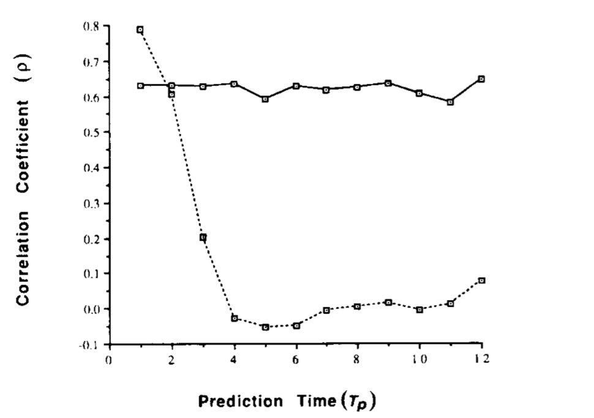Forecasting communities
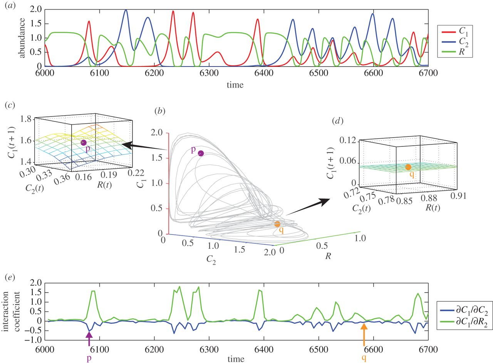Predicting flu
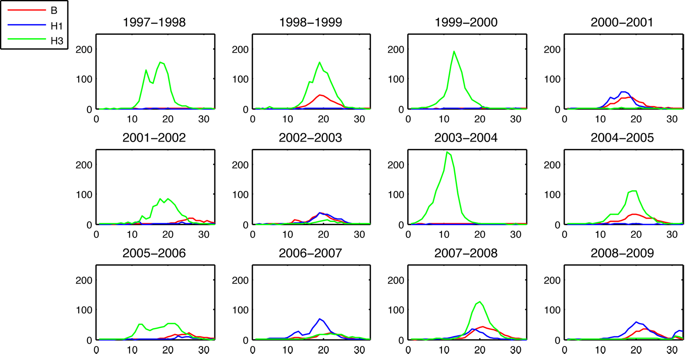Epidemic sizes negatively correlated
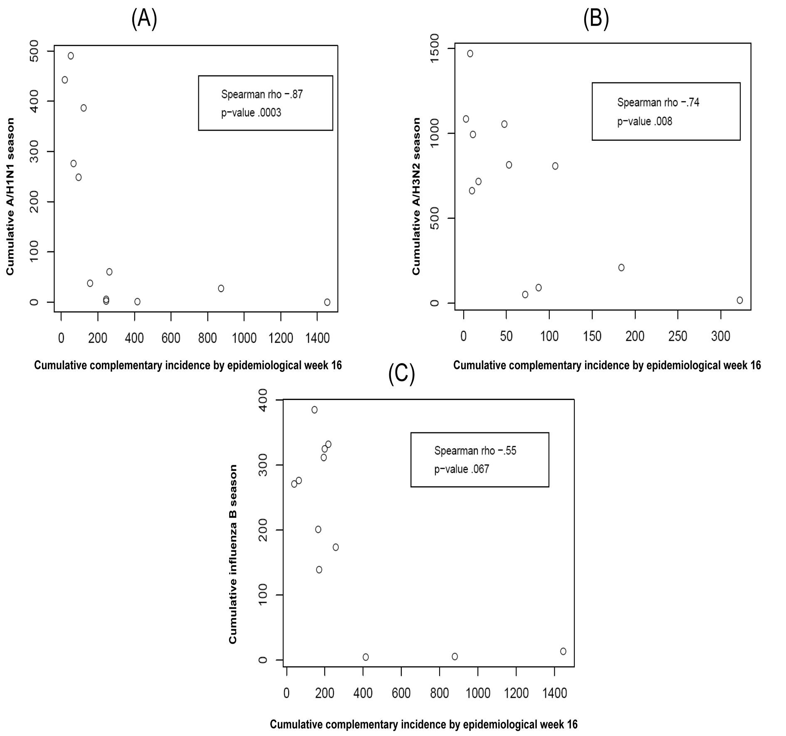Predict based on cumulative incidence
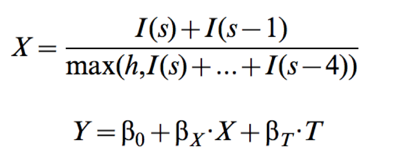where $I(s)$ is the incidence in week $s$, $h$ is a strain-specific incidence threshold, $T$ is the time of crossing $h$, and $Y$ is the strain's whole-season cumulative incidence proxy.
Predictions v. observations (H3N2)
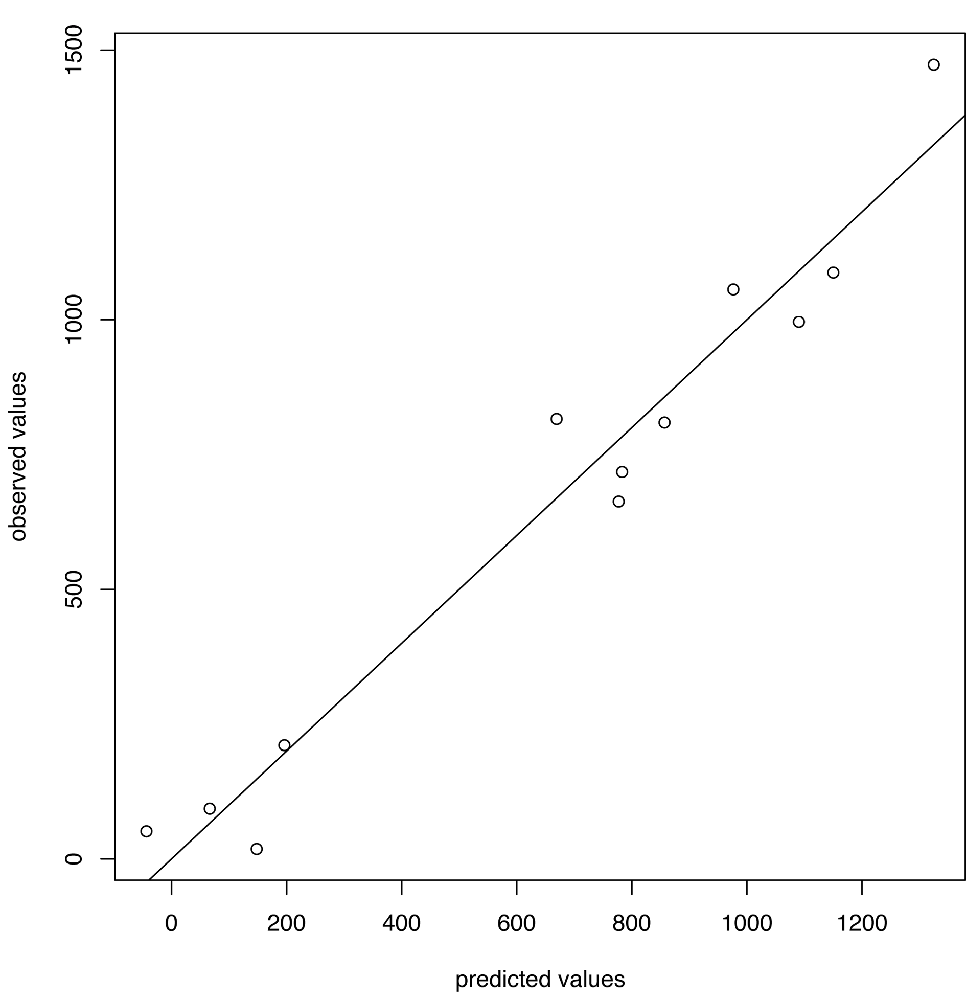Predicting flu in Hong King
Aim: Predict peak timing and magnitude 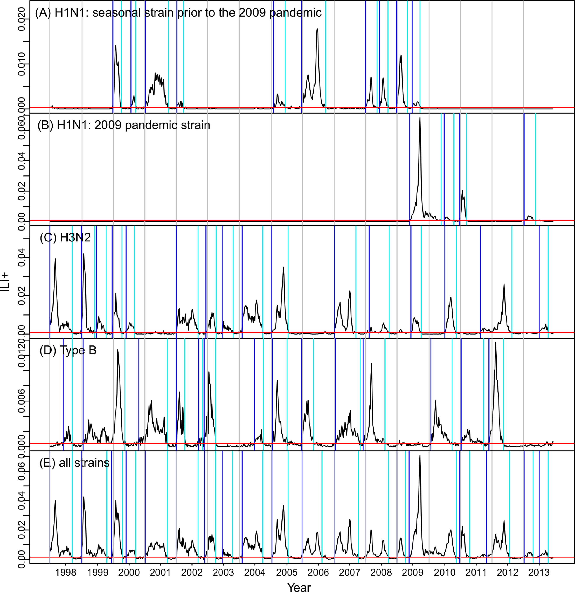
Mechanistic model and particle filter
Achieves 37% accuracy with 1-3 week lead, ~50% at 0 week lead
Epidemic Prediction Initiative
Forecasting flu evolution

Vaccine strain selection timeline

Seek to explain change in clade frequencies over 1 year

Fitness models can project clade frequencies
Clade frequencies $X$ derive from the fitnesses $f$ and frequencies $x$ of constituent viruses, such that
$$\hat{X}_v(t+\Delta t) = \sum_{i:v} x_i(t) \, \mathrm{exp}(f_i \, \Delta t)$$
This captures clonal interference between competing lineages

Clonal interference
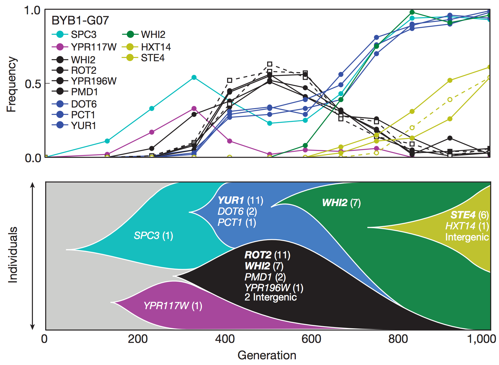Predictive fitness models
A simple predictive model estimates the fitness $f$ of virus $i$ as
$$\hat{f}_i = \beta^\mathrm{ep} \, f_i^\mathrm{ep} + \beta^\mathrm{ne} \, f_i^\mathrm{ne}$$
where $f_i^\mathrm{ep}$ measures cross-immunity via substitutions at epitope sites and $f_i^\mathrm{ne}$ measures mutational load via substitutions at non-epitope sites
Model selection
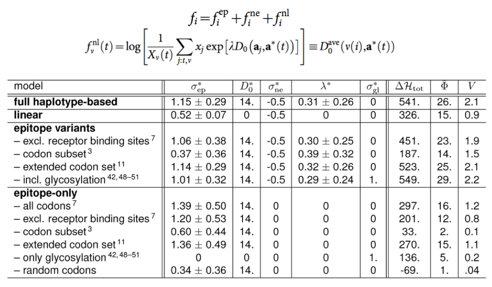Performance

Emergence and spread of SARS-CoV-2 variant viruses
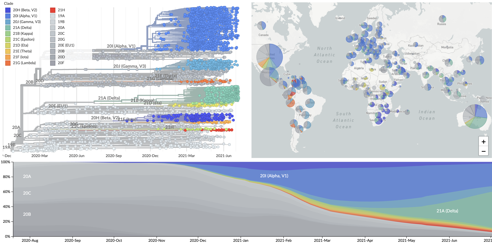Emergence and spread of SARS-CoV-2 variant viruses
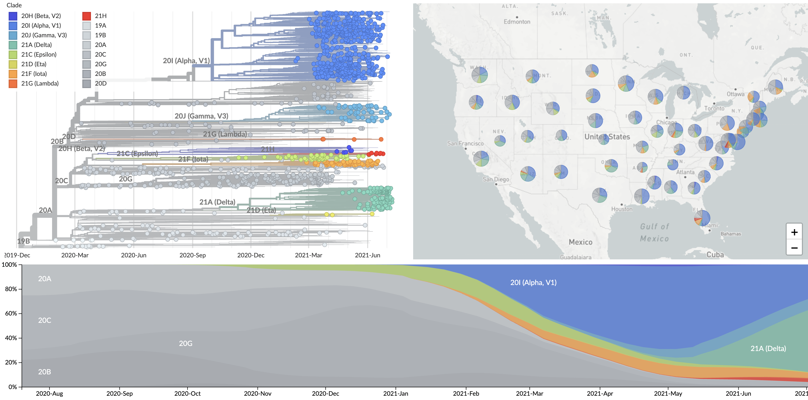Logistic growth
Exponential growth of fitter variant appears as logistic growth in frequency space
Logistic regression: $$p(x) = \frac{1}{1 + e^{-(\beta_0 + \beta_1 x)}}$$